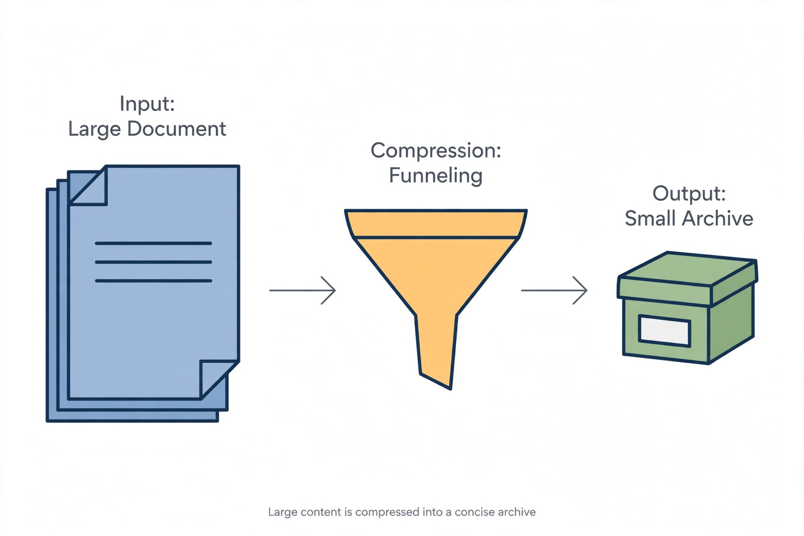

Data compression

[Image: A large file icon shrinking through a funnel into a small archive icon]
Data compression is the encoding of information using fewer bits than the original representation. Lossless compression (ZIP files, PNG images) permits exact reconstruction and is bounded by the source's entropy; lossy compression (JPEG, MP3, video codecs) discards imperceptible detail to shrink files far more.
Claude Shannon's source coding theorem (1948) founded the theory: entropy is the exact limit of lossless compression. Practical schemes combine modelling (predict what comes next) with coding (spend fewer bits on likely symbols).
Algorithms
Huffman coding (1952, a term paper by David Huffman that beat his professor's best known method) assigns variable-length codes by frequency. The LZ77/LZ78 dictionary methods of Abraham Lempel and Jacob Ziv (1977–78) power ZIP, GIF and much else; modern codecs add context modelling and range coding.
Compression is also a lens on intelligence and randomness: a string that cannot be compressed is, in Kolmogorov's sense, random.